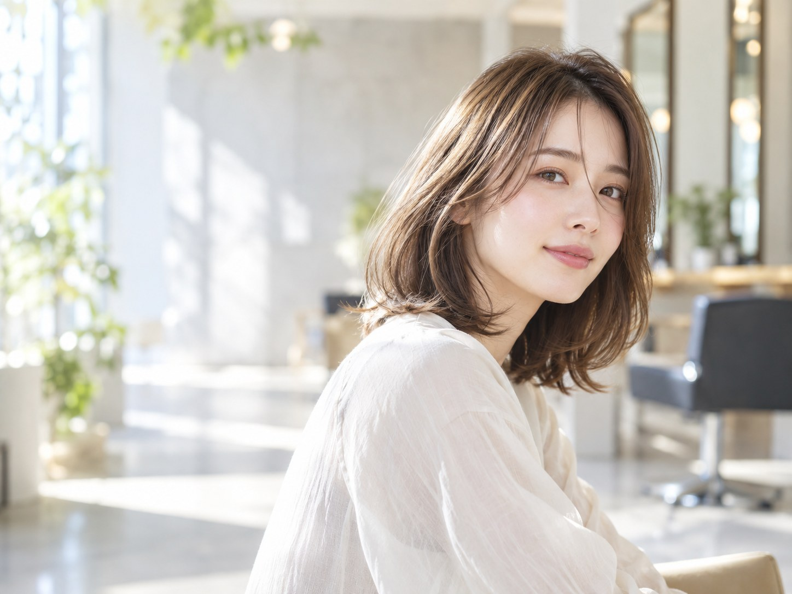
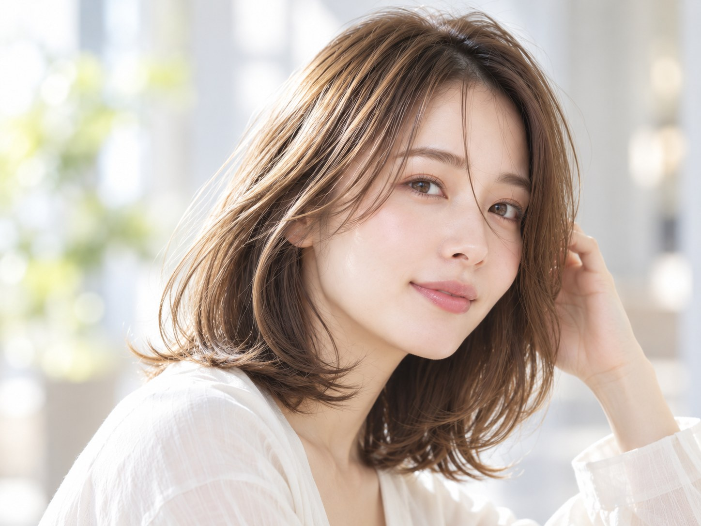

FIND YOUR NATURAL FIT
「似合う」と
「扱いやすい」を、
毎日の髪に。
曖昧なイメージからでも、一緒に見つける。
髪質と骨格、毎日の過ごし方まで考えたスタイルへ。
01 — 05SCROLL TO EXPLORE

01 / CONCEPT
OUR POINT OF VIEW
うまく言葉に
できなくても、
大丈夫。
「少しだけ雰囲気を変えたい」「自分に何が似合うのかわからない」。そんな気持ちも、スタイルを考える大切な出発点。ひとつの正解を押しつけるのではなく、あなたの好みや髪の個性を一緒にほどいていく。そんな美容室のあり方を描きました。
02 / UNDERSTANDING
YOUR WORDS, YOUR STYLE
まだ言葉にならない
「好き」から、
はじめよう。
理想を細かく説明できなくても構いません。髪質や骨格、いつものスタイリング、なりたい雰囲気。その一つひとつを重ねて、自然体でいられる髪型を考える。
03 / EVERYDAY
BEYOND THE SALON
サロンの帰り道
だけで終わらない。
乾かすだけでまとまりやすいこと。伸びてからも形を楽しめること。朝、鏡の前で過ごす時間が少し軽くなること。
特別な日の仕上がりだけでなく、ふつうの毎日に続いていく心地よさを、スタイルの中心に。
01自然なまとまりNATURAL BALANCE
02毛先の厚みと軽さSOFT SILHOUETTE
03毎日の扱いやすさEASY EVERYDAY

04 / STYLE
SOFT SHAPE, SUBTLE COLOR
軽さとまとまり、
その両方を。
顔まわりのやわらかな動き。毛先に残るほどよい厚み。光に透けるような、ニュアンスのあるカラー。
華やかさを足しすぎず、もともとの魅力がふっと引き立つような、自然な表情を。
natural × elegant
05 / OUR MOOD
A LITTLE ROOM TO BREATHE
気負わず、相談できる時間。
髪のことも、何気ない日々のことも。リラックスして言葉を交わせる場所でありたい。
そんな想いを、このサンプルの世界観に込めました。
Nexc.美容室Nexc（ねくす）
神奈川県横浜市中区桜木町一丁目101番地1
※サンプル設定の所在地。営業・予約受付は行っていません。